T = int(2e2)
alphas = np.linspace(0.2, 1.9, 40)
D = 0.5
reps = int(1e4)
tmsd_a = np.zeros((len(alphas), reps))
exp_a = np.zeros((len(alphas), 100))
taus = np.arange(0, 100)
vacf_a = np.zeros((len(alphas[alphas < 1]), len(taus)))
for idx_a, alpha in enumerate(tqdm(alphas)):
trajs = []
for rep in range(reps):
disp = models_phenom().disp_fbm(alpha, D, T)
# Generate trajectory
traj = np.cumsum(disp)
trajs.append(traj)
# Calculate tMSD(tlag = 1)
tmsd_a[idx_a, rep] = msd_analysis().tamsd(traj, t_lags = [1])
if rep < 100:
# Calculate exponent
exp_a[idx_a, rep] = msd_analysis().get_exponent(traj)
if alpha < 1:
trajs = np.vstack(trajs)
vacf_a[idx_a, :] = vacf(trajs = trajs, delta_t = 1, taus = taus)models_phenom
Class constructor
models_phenom
models_phenom ()
Constructor of the class
FBM displacements generator
models_phenom
models_phenom ()
Constructor of the class
Properties of FBM
deltats = [1]
taus = np.arange(0, 100)
alphas = np.arange(0.1, 1.91, 0.3)
reps = int(1e4)
fig, ax = plt.subplots(1, len(alphas), figsize = (len(alphas)*3, 3))
for idxa, alpha in enumerate(alphas):
trajs = np.vstack([np.cumsum(models_phenom().disp_fbm(alpha, D, 200)) for _ in range(reps)])
trajs_n = np.vstack([np.cumsum(FGN(hurst = alpha/2).sample(n = T)) for _ in range(reps)])
for deltat in deltats:
v = vacf(trajs, deltat, taus)
vn = vacf(trajs_n, deltat, taus)
ax[idxa].plot(taus/deltat, v.flatten(), '-', c = f'C{idxa}', label = 'Normalized')
ax[idxa].plot(taus/deltat, vn.flatten(), 'o', alpha = 0.2, c = 'k', label = 'Non-normalized')
ax[idxa].set_title(fr'$\alpha$ = {np.round(alpha,1)}')
ax[0].legend()
plt.setp(ax, xlim = (-1, 30));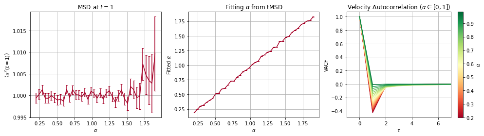
Sampling diffusion properties
In some cases, we may need to sample the diffusion parameters of a particle with restrictions on the distribution and distance between parameters of each state. This following function returns the correct values given the necessary contrainsts
models_phenom
models_phenom ()
Constructor of the class
N = 1000; L = 50; T = 2;
trajs, labels = models_phenom().multi_state(N = N,
T = T,
L = L,
M = np.array([[0.95 , 0.05],[0.01, 0.99]]),
Ds = np.array([[1, 0], [1, 0.1]]),
alphas = np.array([[1, 0.01], [0.4, 0.01]]),
epsilon_a=[0.2], gamma_d = [0.8],
return_state_num=True)fig, ax = plt.subplots()
ax.hist(labels[:,:,1].flatten(), bins = 100)
plt.setp(ax, title = r'Distribution of $D$ - both $\mu=1$, $\gamma_d = 0.8$', xlabel = r'$D$', ylabel = 'Frequency');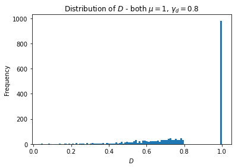
fig, ax = plt.subplots()
ax.hist(labels[:,:,0].flatten(), bins = 100)
plt.setp(ax, title = r'Distribution of $\alpha$', xlabel = r'$\alpha$', ylabel = 'Frequency');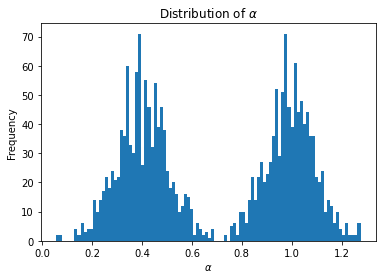
fig, ax = plt.subplots()
ax.hist(labels[:,:,0].flatten(), bins = 100)
plt.setp(ax, title = r'Distribution of $\alpha$', xlabel = r'$\alpha$', ylabel = 'Frequency');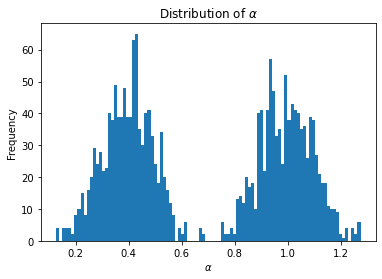
Single state model
Non interacting particles, diffusing according to a unique diffusion state with BM or FBM of different \(H\).
Single trajectory generator
Input: - \(T\): (scalar) Length of the trajectory - \(D\): (scalar) Diffusion coefficient (defined as the square root of the standard deviation of the displacements). - \(\alpha\): (scalar) anomalous exponent. - \(L\): (scalar) size of the squared box acting as environment. If None, the system is infinite.
Output: - pos: (array of size \(T\times 2\)) Position of the particle at each timestep. - labels: (array of size \(T\times 3\)) Anomalous exponent, D and state at each timestep. In this case, the state is alway ‘free’.
models_phenom
models_phenom ()
Constructor of the class
traj, labels = models_phenom._single_state_traj(D = 0.05, T =1000, alpha = 1.98, L = 10)
fig, ax = plt.subplots(3, 1, figsize = (7, 7.5), tight_layout = True)
ax[0].plot(traj[:, 0], traj[:, 1], alpha = 0.5)
plt.setp(ax[0], xlabel = 'X', ylabel = 'Y')
ax[0].axhline(10, ls = '--', alpha = 0.3, c = 'k')
ax[0].axhline(0, ls = '--', alpha = 0.3, c = 'k')
ax[0].axvline(10, ls = '--', alpha = 0.3, c = 'k')
ax[0].axvline(0, ls = '--', alpha = 0.3, c = 'k')
ax[1].plot(traj[:, 0], '.', label = 'X')
ax[1].plot(traj[:, 1], '.', label = 'Y', )
plt.setp(ax[1], ylabel = 'Position', xlabel = 'Time')
ax[1].axhline(10, ls = '--', alpha = 0.3, c = 'k')
ax[1].axhline(0, ls = '--', alpha = 0.3, c = 'k')
ax[1].legend()
ax[2].plot(labels[:, 0], '.', label = r'$\alpha$')
ax[2].plot(labels[:, 1], '.', label = r'$D$' )
plt.setp(ax[2], ylabel = 'Label', xlabel = 'Time')
ax[2].legend()<matplotlib.legend.Legend>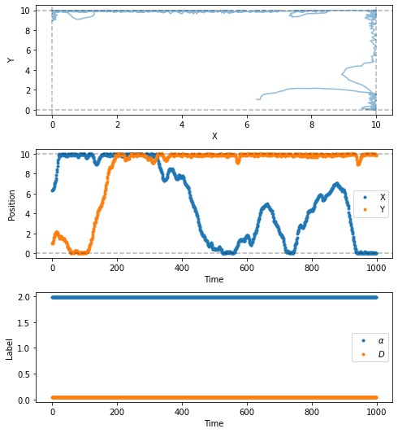
Dataset generation
Input: - \(N\): (scalar) Number of trajectories in the dataset - \(T\): (scalar) Length of the trajectory - \(D\): (scalar) Diffusion coefficient (defined as the square root of the standard deviation of the displacements). - \(\alpha\): (scalar) anomalous exponent. - \(L\): (scalar) size of the squared box acting as environment. If None, the system is infinite.
models_phenom
models_phenom ()
Constructor of the class
N = 500; L = 5; T = 100;
alpha = [0.8, 0.1]; D = 1.2
trajs, labels = models_phenom().single_state(N = N,
L = L,
T = T,
alphas = alpha,
Ds = D)fig, ax = plt.subplots()
ax.hist(labels[0,:,0])
plt.setp(ax, title = r'Distribution of $\alpha$', xlabel = r'$\alpha$', ylabel = 'Frequency');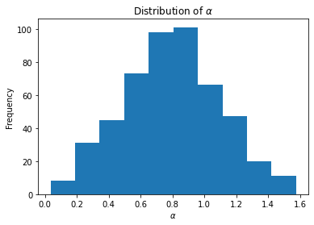
fig, axs = plt.subplots(3, 4, figsize = (15, 7.5), tight_layout = True)
for ax in axs.transpose():
part = np.random.randint(N)
ax[0].set_title(f'Particle # {part}')
ax[0].plot(trajs[:, part, 0], trajs[:, part, 1], alpha = 0.5)
ax[0].axhline(L, ls = '--', alpha = 0.3, c = 'k')
ax[0].axhline(0, ls = '--', alpha = 0.3, c = 'k')
ax[0].axvline(L, ls = '--', alpha = 0.3, c = 'k')
ax[0].axvline(0, ls = '--', alpha = 0.3, c = 'k')
ax[1].plot(trajs[:, part, 0], 'o-', label = 'X', ms = 3, lw = 0.1)
ax[1].plot(trajs[:, part, 1], 'o-', label = 'Y', ms = 3, lw = 0.1)
ax[1].axhline(L, ls = '--', alpha = 0.3, c = 'k')
ax[1].axhline(0, ls = '--', alpha = 0.3, c = 'k')
ax[2].plot(labels[:, part, 0], 'o-', label = r'$\alpha$', ms = 3, lw = 0.1)
ax[2].plot(labels[:, part, 1], 'o-', label = r'$D$', ms = 3, lw = 0.1)
plt.setp(axs[0, :], xlabel = 'X', ylabel = 'Y')
axs[1, 0].legend()
plt.setp(axs[1, 0], ylabel = 'Position')
plt.setp(axs[1, :], xticklabels = '')
axs[2, 0].legend()
plt.setp(axs[2, 0], ylabel = 'Labels')
plt.setp(axs[2, :], xlabel = 'Time');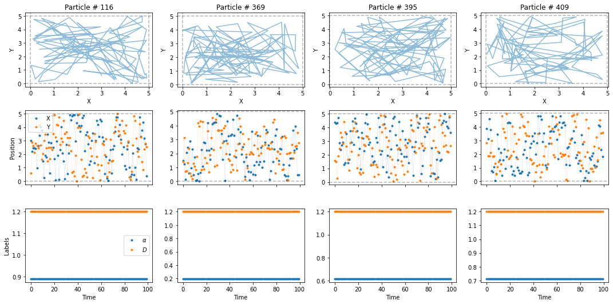
Multiple state model
Particles diffusing according to a time-dependent \(N\)-state model of diffusion, representing proteins undergoing changes of diffusivity and/or \(H\) induced by, e.g. allosteric changes or ligand-binding.
Single trajectory generator
Input: - \(T\): (scalar) lenght of the trajectory - \(M\): (matrix) Transition matrix stating the probability of switching between states at each time step. - \(D\)s: (scalar or vector) diffusion coefficient of each state. If scalar, all segments have same value. - \(\alpha\)s (alphas): (scalar or vector) anomalous exponent of each state. If scalar, all segments have same value. - \(L\): (scalar) size of the squared box acting as environment. If None, the system is infinite.
models_phenom
models_phenom ()
Constructor of the class
T = 1000; L = 100
X = models_phenom._multiple_state_traj(T = T,
L = L,
alphas = [0.7, 1.98], Ds = [0, 1], return_state_num=True)
traj = X[0]; labels = X[1]
# traj, labels = multiple_states(T = 1000,
# L = 10,
# M = np.array([[0.8 , 0.1, 0.1],[0.01, 0.98, 0.01],[0, 0.05 ,0.95]]),
# alphas = [0.8, 1.2, 1.4],
# Ds = [1, 0, 2])
fig, ax = plt.subplots(3, 1, figsize = (7, 7.5), tight_layout = True)
ax[0].plot(traj[:, 0], traj[:, 1], alpha = 0.5)
plt.setp(ax[0], xlabel = 'X', ylabel = 'Y')
ax[0].axhline(L, ls = '--', alpha = 0.3, c = 'k')
ax[0].axhline(0, ls = '--', alpha = 0.3, c = 'k')
ax[0].axvline(L, ls = '--', alpha = 0.3, c = 'k')
ax[0].axvline(0, ls = '--', alpha = 0.3, c = 'k')
ax[1].plot(traj[:, 0], '.', label = 'X')
ax[1].plot(traj[:, 1], '.', label = 'Y', )
plt.setp(ax[1], ylabel = 'Position', xlabel = 'Time')
ax[1].axhline(L, ls = '--', alpha = 0.3, c = 'k')
ax[1].axhline(0, ls = '--', alpha = 0.3, c = 'k')
ax[1].legend()
ax[2].plot(labels[:, 0], '.', label = r'$\alpha$')
ax[2].plot(labels[:, 1], '.', label = r'$D$' )
ax[2].plot(labels[:, 2], '.', label = r'$state$', alpha = 0.3 )
plt.setp(ax[2], ylabel = 'Label', xlabel = 'Time')
ax[2].legend()AttributeError: 'models_phenom' object has no attribute 'disp_fbm'Dataset generation
Input: - \(N\): (scalar) Number of trajectories in the dataset - Inputs of multiple_states
models_phenom
models_phenom ()
Constructor of the class
N = 1000; L = 50; T = 10;
trajs, labels = models_phenom().multi_state(N = N,
T = T,
L = L,
M = np.array([[0.95 , 0.05],[0.01, 0.99]]),
Ds = np.array([[1, 0], [0.5, 0.01]]),
alphas = np.array([[1, 0.01], [0.5, 0.02]]),
epsilon_a=[0.4], gamma_d = [0.2],
return_state_num=True)fig, ax = plt.subplots()
ax.hist(labels[:,:,1].flatten())
plt.setp(ax, title = r'Distribution of $D$', xlabel = r'$D$', ylabel = 'Frequency');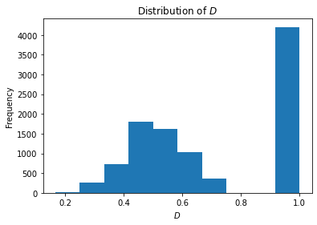
fig, ax = plt.subplots()
ax.hist(labels[:,:,0].flatten(), bins = 20)
plt.setp(ax, title = r'Distribution of $\alpha$', xlabel = r'$\alpha$', ylabel = 'Frequency');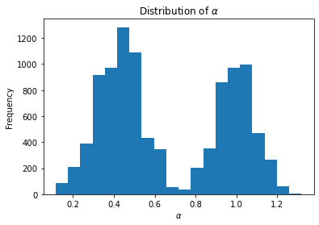
fig, axs = plt.subplots(3, 4, figsize = (15, 7.5), tight_layout = True)
for ax in axs.transpose():
part = np.random.randint(N)
ax[0].set_title(f'Particle # {part}')
ax[0].plot(trajs[:, part, 0], trajs[:, part, 1], alpha = 0.5)
ax[0].axhline(L, ls = '--', alpha = 0.3, c = 'k')
ax[0].axhline(0, ls = '--', alpha = 0.3, c = 'k')
ax[0].axvline(L, ls = '--', alpha = 0.3, c = 'k')
ax[0].axvline(0, ls = '--', alpha = 0.3, c = 'k')
ax[1].plot(trajs[:, part, 0], 'o-', label = 'X', ms = 3, lw = 0.1)
ax[1].plot(trajs[:, part, 1], 'o-', label = 'Y', ms = 3, lw = 0.1)
ax[1].axhline(L, ls = '--', alpha = 0.3, c = 'k')
ax[1].axhline(0, ls = '--', alpha = 0.3, c = 'k')
ax[2].plot(labels[:, part, 0], 'o-', label = r'$\alpha$', ms = 3, lw = 0.1)
ax[2].plot(labels[:, part, 1], 'o-', label = r'$D$', ms = 3, lw = 0.1)
ax[2].plot(labels[:, part, -1], 'o-', label = r'$D$', ms = 3, lw = 0.1, alpha = 0.3)
plt.setp(axs[0, :], xlabel = 'X', ylabel = 'Y')
axs[1, 0].legend()
plt.setp(axs[1, 0], ylabel = 'Position')
plt.setp(axs[1, :], xticklabels = '')
axs[2, 0].legend()
plt.setp(axs[2, 0], ylabel = 'Labels')
plt.setp(axs[2, :], xlabel = 'Time');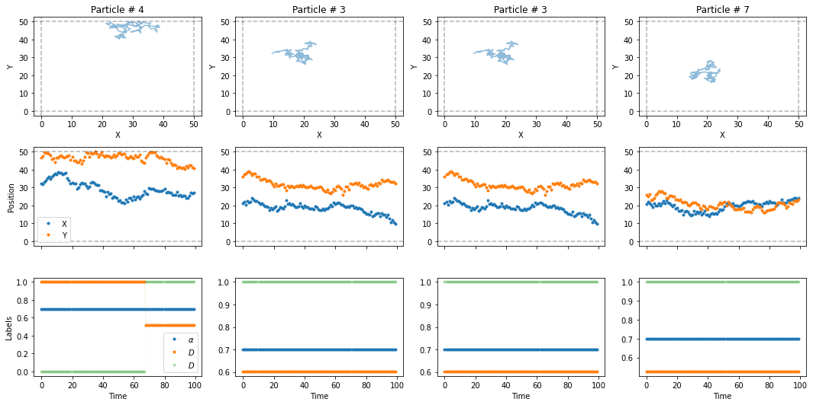
Dimerization
Particle diffusing according to a space-dependent 2-state model of diffusion, representing proteins being confined by immobile traps induced by, e.g. the actin cytoskeleton or clathrin-coated pits.
Auxiliary functions
Distance calculator
models_phenom
models_phenom ()
Constructor of the class
Escaping dynamics
models_phenom
models_phenom ()
Constructor of the class
Clustering dynamics
models_phenom
models_phenom ()
Constructor of the class
N = 200; L = 10; r = 1; max_n = 2; Ds = np.ones(100)
pos = np.random.rand(N, 2)*L
label = np.random.choice(range(500), N, replace = False)
max_label = max(label+2)
distance = models_phenom._get_distance(pos)
diff_state = np.zeros(N).astype(int)
l, d = models_phenom._make_condensates(0.01, label, diff_state, r, distance, max_label)
le, de = models_phenom._make_escape(0.8, l, d)
np.unique(l[np.argwhere(d == 1)], return_counts=True)(array([ 8, 54, 101, 119, 144, 162, 176, 251, 283, 296, 304, 305, 346,
397, 416, 444, 476]),
array([2, 2, 2, 2, 2, 2, 2, 2, 2, 2, 2, 2, 2, 2, 2, 2, 2], dtype=int64))Stokes drag
class models_phenom(models_phenom):
@staticmethod
def _stokes(D):
''' Applies a Stokes-Einstein -like transformation to two
diffusion coefficients '''
D1 = D[0]; D2 = D[1]
return 1/((1/D1)+(1/D2))Time evolution
Input: - \(N\): (scalar) number of particles - \(T\): (scalar) length of the trajectory - \(L\): (scalar) length of the squared box acting as environment - \(r\): (scalar) size of the particles - \(P_u\): (scalar) unbinding probability - \(P_b\): (scalar) binding probability - \(D\)s: (2 x 3 array) \((a,b,c)\) parameters of the Pert distribution defining the diffusion coefficients for the two diffusive states. - \(\alpha\)s: (2 x 3 array) \((a,b,c)\) parameters of the Pert distribution defining the anomalous exponent for the two diffusive states. - \(\gamma\)s: (bool or float) if float, the \(D_{dimer} = \mathrm{mean}(D_1, D_2)/\gamma\)
models_phenom
models_phenom ()
Constructor of the class
N = 500; L = 50; r = 1; T = 100
Pu = 0.1 # Unbinding probability
Pb = 1 # Binding probability
Ds = np.array([[2, 0], [0, 0]]) # Diffusion coefficients of two states
alphas = np.array([[1, 0], [1, 0.2]]) # Anomalous exponents for two states
trajs, labels = models_phenom().dimerization(N = N,
L = L,
r = r,
T = T,
Pu = Pu, # Unbinding probability
Pb = Pb, # Binding probability
Ds = Ds, # Diffusion coefficients of two states
alphas = alphas, # Anomalous exponents for two states,
gamma = 3,
return_state_num = True,
stokes = True, epsilon_a=0.2
)fig, ax = plt.subplots(1,2, tight_layout = True)
ax[0].hist(labels[:,:,1].flatten(), bins = 100, density = 1)
plt.setp(ax[0], title = r'Distribution of $D$ - both $\mu=1$, $\gamma_d = 0.8$', xlabel = r'$D$', ylabel = 'Frequency');
ax[1].hist(labels[:,:,0].flatten(), bins = 100, density = 1)
plt.setp(ax[1], title = r'Distribution of $\alpha$', xlabel = r'$\alpha$', ylabel = 'Frequency');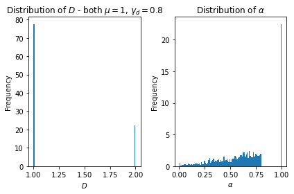
fig, ax = plt.subplots()
ax.hist(labels[:,:,0].flatten(), bins = 100)
plt.setp(ax, title = r'Distribution of $\alpha$', xlabel = r'$\alpha$', ylabel = 'Frequency');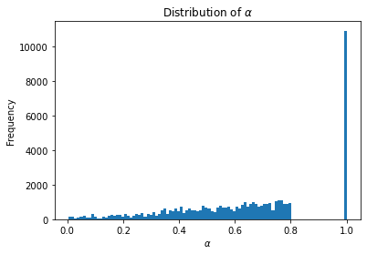
fig, axs = plt.subplots(3, 4, figsize = (15, 7.5), tight_layout = True)
for idx, ax in enumerate(axs.transpose()):
part = np.random.randint(N)
ax[0].set_title(f'Particle # {part}')
ax[0].plot(trajs[:, part, 0], trajs[:, part, 1], alpha = 0.5)
ax[0].axhline(L, ls = '--', alpha = 0.3, c = 'k')
ax[0].axhline(0, ls = '--', alpha = 0.3, c = 'k')
ax[0].axvline(L, ls = '--', alpha = 0.3, c = 'k')
ax[0].axvline(0, ls = '--', alpha = 0.3, c = 'k')
ax[1].plot(trajs[:, part, 0], 'o-', label = 'X', ms = 3, lw = 0.1)
ax[1].plot(trajs[:, part, 1], 'o-', label = 'Y', ms = 3, lw = 0.1)
ax[1].axhline(L, ls = '--', alpha = 0.3, c = 'k')
ax[1].axhline(0, ls = '--', alpha = 0.3, c = 'k')
ax[2].plot(labels[:, part, 0], 'o-', label = r'$\alpha$', ms = 3, lw = 0.1)
ax[2].plot(labels[:, part, 1], 'o-', label = r'$D$', ms = 3, lw = 0.1)
ax[2].plot(labels[:, part, 2], 'o-', label = r'state', ms = 3, lw = 0.1, alpha = 0.3)
plt.setp(axs[0, :], xlabel = 'X', ylabel = 'Y')
axs[1, 0].legend()
plt.setp(axs[1, 0], ylabel = 'Position')
plt.setp(axs[1, :], xticklabels = '')
axs[2, 0].legend()
plt.setp(axs[2, 0], ylabel = 'Labels')
plt.setp(axs[2, :], xlabel = 'Time');
# plt.savefig('dimerization.svg')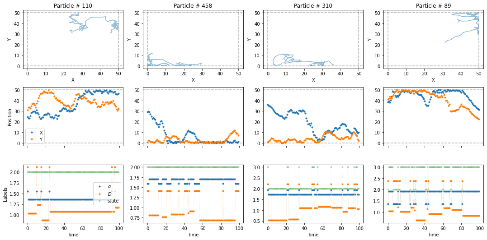
Immobile traps
models_phenom
models_phenom ()
Constructor of the class
models_phenom
models_phenom ()
Constructor of the class
traps_pos = None
alpha = 1.95
D = [1, 0.2]
T = 100
Pb = 1
Pu = 0.1
L = 100
N = 50
Nt = 100
r = 1
traps_pos = np.random.rand(Nt, 2)*L
trajs, labels = models_phenom().immobile_traps(N = N,
T = T,
L = L,
r = r,
Pu = Pu, # Unbinding probability
Pb = Pb, # Binding probability
Ds = D, # Diffusion coefficients of moving state
alphas = alpha, # Anomalous exponents of moving state
Nt = Nt,
traps_pos = traps_pos
)fig, axs = plt.subplots(3, 4, figsize = (15, 7.5), tight_layout = True)
for ax in axs.transpose():
ax[0].scatter(traps_pos[:,0], traps_pos[:,1], c = 'C1', s = np.pi*r**2)
part = np.random.randint(N)
ax[0].set_title(f'Particle # {part}')
ax[0].plot(trajs[:, part, 0], trajs[:, part, 1])
ax[0].axhline(L, ls = '--', alpha = 0.3, c = 'k')
ax[0].axhline(0, ls = '--', alpha = 0.3, c = 'k')
ax[0].axvline(L, ls = '--', alpha = 0.3, c = 'k')
ax[0].axvline(0, ls = '--', alpha = 0.3, c = 'k')
ax[1].plot(trajs[:, part, 0], '-', label = 'X', ms = 3, lw = 0.8)
ax[1].plot(trajs[:, part, 1], '-', label = 'Y', ms = 3, lw = 0.8)
ax[1].axhline(L, ls = '--', alpha = 0.3, c = 'k')
ax[1].axhline(0, ls = '--', alpha = 0.3, c = 'k')
ax[2].plot(labels[:, part, 0], 'o-', label = r'$\alpha$', ms = 3, lw = 0.1)
ax[2].plot(labels[:, part, 1], 'o-', label = r'$D$', ms = 3, lw = 0.1)
ax[2].plot(labels[:, part, 2], 'o-', label = r'state', ms = 3, lw = 0.1)
plt.setp(axs[0, :], xlabel = 'X', ylabel = 'Y')
axs[1, 0].legend()
plt.setp(axs[1, 0], ylabel = 'Position')
plt.setp(axs[1, :], xticklabels = '')
axs[2, 0].legend()
plt.setp(axs[2, 0], ylabel = 'Labels')
plt.setp(axs[2, :], xlabel = 'Time');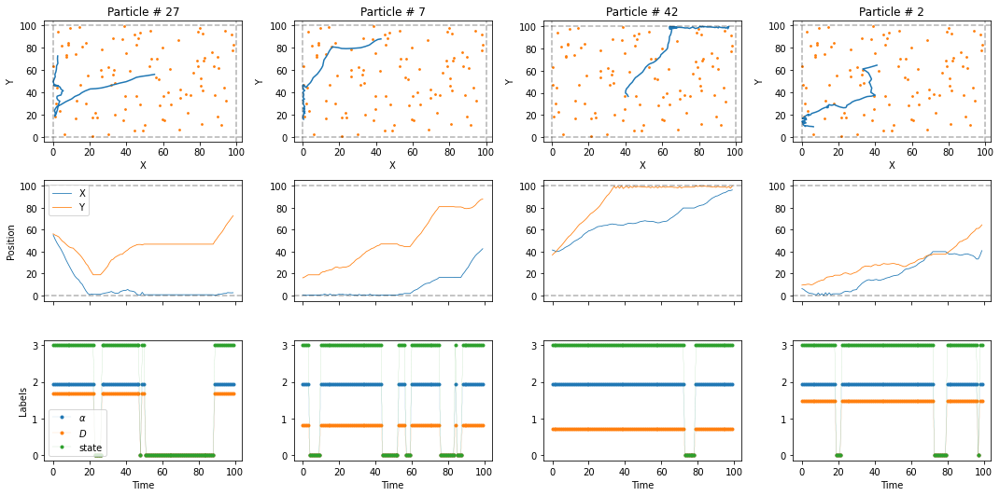
traps_pos = None
alpha = 1.95
D = [1, 0.2]
T = 100
Pb = 1
Pu = 0.1
L = 100
N = 50
Nt = 100
r = 1
traps_pos = np.random.rand(Nt, 2)*L
trajs, labels = models_phenom().immobile_traps(N = N,
T = T,
L = L,
r = r,
Pu = Pu, # Unbinding probability
Pb = Pb, # Binding probability
Ds = D, # Diffusion coefficients of moving state
alphas = alpha, # Anomalous exponents of moving state
Nt = Nt,
traps_pos = traps_pos
)Confinement
Auxiliary functions
Distribute compartments
models_phenom
models_phenom ()
Constructor of the class
fig, ax = plt.subplots(figsize = (5,5))
Nc = 60; r = 10; L = 256;
comp_center = models_phenom._distribute_circular_compartments(Nc, r, L)
for c in comp_center:
circle = plt.Circle((c[0], c[1]), r)
ax.add_patch(circle)
ax.set_xlim(0,L)
ax.set_ylim(0,L)(0.0, 256.0)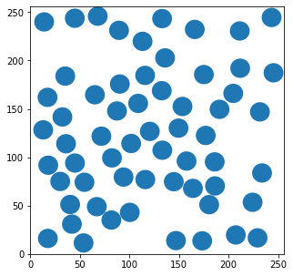
Reflection inside circles
models_phenom
models_phenom ()
Constructor of the class
circle_radius = 2;
circle_center = [0,0]
beg = np.array([0.8, 0])+circle_center
end = np.array([2.5, -0.8])+circle_center
final_point, intersect = models_phenom._reflected_position(circle_center, circle_radius, beg, end)
fig, ax = plt.subplots(figsize = (5, 5))
circle = plt.Circle(circle_center, circle_radius, facecolor = 'w', ec = 'C0', label = 'Compartment', zorder = -1)
ax.add_patch(circle)
ax.plot([beg[0],end[0]], [beg[1], end[1]], '-o', c = 'C1', label = 'Displacement segment')
ax.plot([circle_center[0], intersect[0]], [circle_center[1], intersect[1]], c = 'C2')
ax.plot([intersect[0], final_point[0]], [intersect[1], final_point[1]], '-o', c = 'C4', label = 'Resulting reflection')
ax.set_ylim(circle_center[1]-circle_radius*1.5, circle_center[1]+circle_radius*1.5)
ax.set_xlim(circle_center[0]-circle_radius*1.5, circle_center[0]+circle_radius*1.5)
ax.legend()<matplotlib.legend.Legend>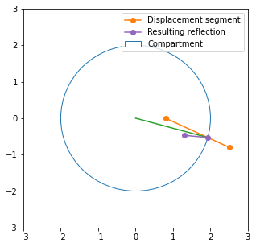
Single trajectory generator
models_phenom
models_phenom ()
Constructor of the class
N = 50; L = 20
Nc = 15; r = 1; L = 20
Ds = [[1,0], [0.5,0.1]]
r , L, Nc = (20, 256, 20)
comp_center = models_phenom._distribute_circular_compartments(Nc = Nc, r = r, L = L)
trajs, labels = models_phenom()._confinement_traj(trans = 0.1, Nc = Nc, r = r, L = L, T =200, comp_center=comp_center, Ds = [1, 1])
fig, axs = plt.subplots(1,2, figsize = (10,5))
ax = axs[0]
for c in comp_center:
circle = plt.Circle((c[0], c[1]), r, facecolor = 'None', edgecolor = 'C0')
ax.add_patch(circle)
# ax.plot(trajs[:,0], trajs[:,1], c = 'C1', zorder = -2)
ax.scatter(trajs[:,0], trajs[:,1], c = plt.cm.cividis(labels[:,-1]/2), zorder = -1, s = 2)
plt.setp(axs[0], xlim = (0,L), ylim = (0,L), xlabel = 'X', ylabel = 'Y')
axs[1].plot(trajs[:,0], label = 'x');
axs[1].plot(trajs[:,1], label = 'y');
axs[1].legend()
plt.setp(axs[1], xlabel = 'Position', ylabel = 'Time')[Text(0.5, 0, 'Position'), Text(0, 0.5, 'Time')]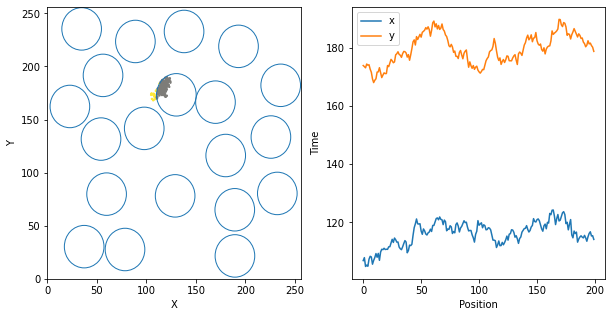
Dataset generation
Input: - \(N\): (scalar) Number of trajectories in the dataset - Inputs of _confinement_traj
models_phenom
models_phenom ()
Constructor of the class
N = 500; L = 20
Nc = 15; r = 1; L = 20
Ds = [[1,0], [0.5,0.1]]
alphas = [[0.7, 0], [0.5,0.1]]
r , L, Nc = (10, 256, 60)
comp_center = models_phenom._distribute_circular_compartments(Nc = Nc, r = r, L = L)
trajs, labels = models_phenom().confinement(N = N, L = L, comp_center = comp_center, trans = 0.2, Ds = Ds,
r = r, alphas = alphas, epsilon_a = [0.2])fig, axs = plt.subplots(3, 4, figsize = (15, 7.5), tight_layout = True)
for ax in axs.transpose():
for c in comp_center:
circle = plt.Circle((c[0], c[1]), r, facecolor = 'None', edgecolor = 'C1', zorder = 10)
ax[0].add_patch(circle)
part = np.random.randint(N)
ax[0].set_title(f'Particle # {part}')
ax[0].plot(trajs[:, part, 0], trajs[:, part, 1], zorder = -2)
ax[0].scatter(trajs[:, part, 0], trajs[:, part, 1], c = labels[:, part, -1]/np.max(labels[:, part, -1]), zorder = -1, s = 4, cmap='cividis')
ax[0].axhline(L, ls = '--', alpha = 0.3, c = 'k')
ax[0].axhline(0, ls = '--', alpha = 0.3, c = 'k')
ax[0].axvline(L, ls = '--', alpha = 0.3, c = 'k')
ax[0].axvline(0, ls = '--', alpha = 0.3, c = 'k')
ax[1].plot(trajs[:, part, 0], '-', label = 'X', ms = 3, lw = 0.8)
ax[1].plot(trajs[:, part, 1], '-', label = 'Y', ms = 3, lw = 0.8)
ax[1].axhline(L, ls = '--', alpha = 0.3, c = 'k')
ax[1].axhline(0, ls = '--', alpha = 0.3, c = 'k')
ax[2].plot(labels[:, part, 0], 'o-', label = r'$\alpha$', ms = 3, lw = 0.1)
ax[2].plot(labels[:, part, 1], 'o-', label = r'$D$', ms = 3, lw = 0.1)
ax[2].plot(labels[:, part, 2], 'o-', label = r'state', ms = 3, lw = 0.1)
plt.setp(axs[0, :], xlabel = 'X', ylabel = 'Y')
axs[1, 0].legend()
plt.setp(axs[1, 0], ylabel = 'Position')
plt.setp(axs[1, :], xticklabels = '')
axs[2, 0].legend()
plt.setp(axs[2, 0], ylabel = 'Labels')
plt.setp(axs[2, :], xlabel = 'Time');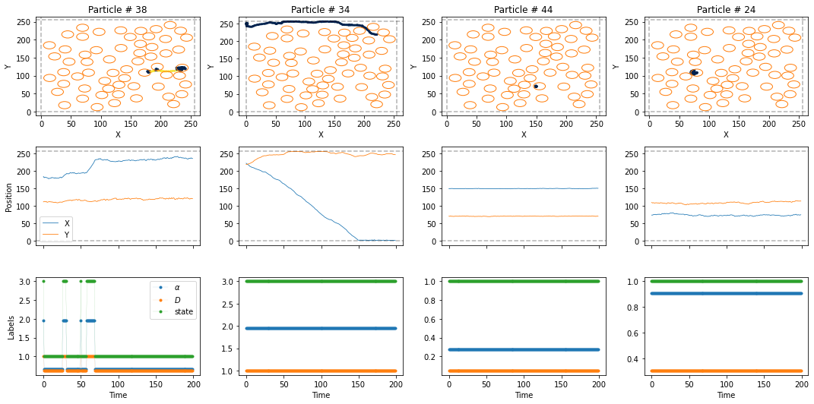
NBDEV Export
import nbdev; nbdev.nbdev_export()To Do
- Efficient generation for N particles in model 1 (and 2?)